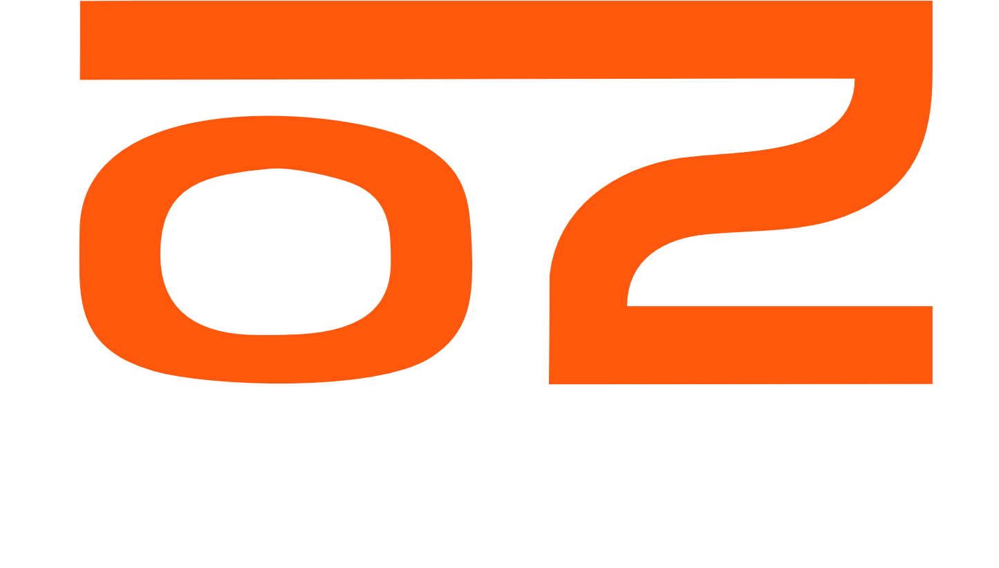

CENTRAL DE PRODUÇÃO
Conecte sua conta Google para acompanhar empresas, clientes, lotes, entregas e prazos com segurança.
Se o Supabase ainda não estiver configurado, é possível testar a interface localmente. Dados de demonstração não sincronizam.
SEU ESPAÇO DE TRABALHO
Acompanhe tudo o que está acontecendo na sua produção.
OZ PLANNER